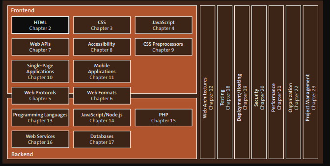

HTML, junto com CSS e JavaScript, é uma das três principais linguagens importantes para o desenvolvimento frontend. Neste capítulo, você aprenderá sobre a linguagem HTML, que é usada para definir a estrutura das páginas web.

Coisas importantes para aprender em HTML:
Seis níveis: <h1> a <h6>. O <h1> é o maior.
Usamos a tag <p>.
Itálico, Negrito, Ênfase, Destaque forte
x2 e H2O
Linha 1
Linha 2
Esta é uma citação longa.
Citação curta: exemplo
Nome da obra
HTML
HTML é uma linguagem de marcação.
Elementos podem receber atributos para passar informações adicionais.
Eles ficam na tag de abertura, com nome e valor entre aspas.
Exemplo de link:
<a href="https://www.exemplo.com">Link</a>
Exemplo funcionando:
Abrir exemplo
O atributo target="_blank" faz o link abrir em nova aba.
Por padrão, abre na mesma aba.
Páginas HTML são arquivos de texto simples com extensão:
.html ou .htm
É comum salvar em uma pasta e abrir no navegador.
Tipos de listas:
- Não ordenadas: <ul>
- Ordenadas: <ol>
- Definição: <dl>, <dt>, <dd>
Externos: levam para outros sites (URL completa)
Exemplo: https://...
Relativos: páginas do mesmo site
Internos: navegação dentro da própria página
Usados para navegar entre páginas do mesmo site.
Em pastas diferentes, usamos ../ para voltar um nível:
<a href="../index.html">Voltar</a>
Servem para navegar dentro da mesma página.
Primeiro definimos um id no elemento.
Exemplo:
<h2 id="chapter01">Chapter 1</h2>
<a href="#chapter01">Ir para Chapter 1</a>
Também é possível combinar URL + âncora:
<a href="http://philipackermann.de/index.html#books">Books</a>
A tag <img> é um elemento vazio.
Ela usa atributos para funcionar:
src: caminho da imagem
alt: texto alternativo
title: texto ao passar o mouse
Exemplo de código:
<img src="images/profile.jpg" alt="Foto de perfil" title="Minha foto"/>